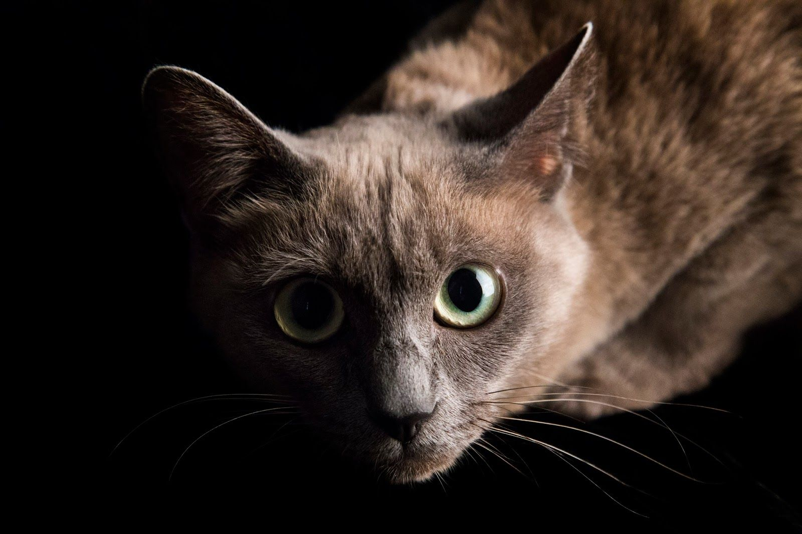
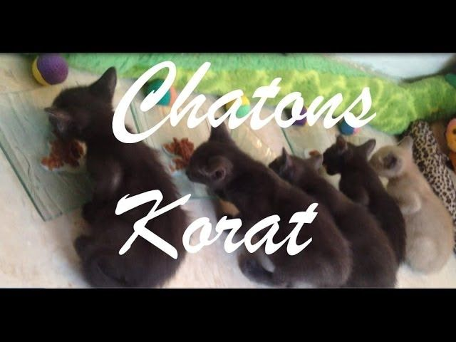
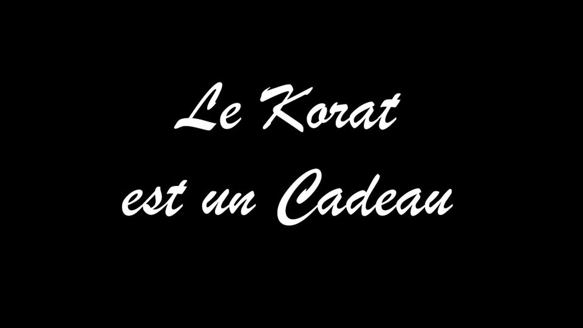

Le Korat, un pelage d'argent et un regard vert.
Nous élevons en petit nombre des Korats fidèles au type d'origine, nés à la maison de parents ramenés de Thaïlande.

Si-Sawat, le chat des jeunes mariés
Une tête en cœur, une robe bleue aux pointes argentées, de grands yeux qui virent au vert entre deux et quatre ans.
Le Korat est une race naturelle de Thaïlande, que l'on offre aux jeunes mariés pour leur porter chance. Il est rare, même dans son pays, et aucun croisement avec une autre race n'est accepté.


Des Korats cherchent leur famille
Ils naissent à la maison et grandissent au milieu de la famille, avec leurs parents.
Chaque chaton part avec son pedigree LOOF, ses vaccins et ce qu'il a l'habitude de manger. Les rencontres se font sur rendez-vous.
Utile au quotidien
Plus de vingt ans de notes d'élevage, rangées pour être retrouvées en quelques secondes.
Ma plante est-elle toxique ?
Lys, muguet, ficus : tapez son nom, voyez le niveau de danger.
Chercher une planteVoyager avec son chat
Vaccins, certificats et quarantaine, pays par pays.
Choisir une destinationUn Korat est-il fait pour moi ?
Et deux autres quiz pour tester vos connaissances.
JouerUne histoire de famille
« Traditionaliste, je produis en petite quantité des Korats tels qu'ils étaient à l'origine. »L'éleveur d'Amour Korat
Tout a commencé avec une petite fille qui voulait un chat, et un Korat nommé Sammy qui ressemblait à la statuette de Bastet de la salle de bains. Depuis : des parents ramenés de Thaïlande, la fondation du Korat Club de France et beaucoup de chatons heureux.

La vie à l'élevage

Dans la tête d'un chaton d'amour korat
Le Korat est un Cadeau Naissance de chat Korat
Naissance de chat KoratParlons de votre futur Korat
Une question, une visite, un chaton ? Appelez-nous ou écrivez-nous.